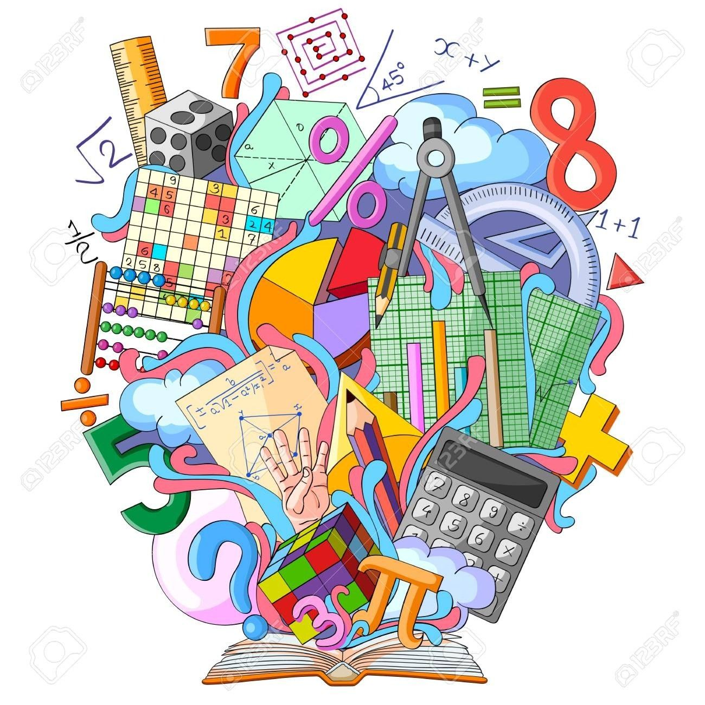
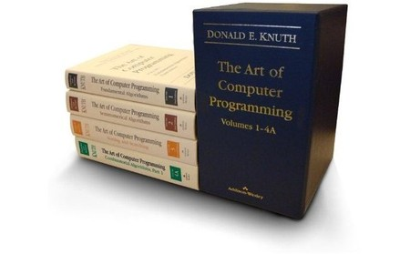

Donald Ervin Knuth
 Donald Ervin Knuth nació el 10 de enero de 1938 en Milwaukee, Wisconsin. Sus padres fueron Ervin Henry Knuth y Louise Marie Bohning. El padre de Ervin fue un profesor de escuela que enseñaba en una escuela Luterana. Jugó un un papel importante en la vocación de su hijo. A traves de su padre adquirió el amor por la enseñanza, la música y las matemáticas. Ervin tocaba el órgano en la iglesia en los servicios dominicales y pronto se convirtió en un apasionado por este instrumento. Donald asistió a la escuela Luterana y estudió con interés la gramática inglesa. De ahí le vino el amor por investigar la estructura de las sentencias y los lenguajes. Durante sus dos primeros años de escuela secundaria, su fascinación por esto le condujo más tarde a escribir código para ordenadores.
Donald Ervin Knuth nació el 10 de enero de 1938 en Milwaukee, Wisconsin. Sus padres fueron Ervin Henry Knuth y Louise Marie Bohning. El padre de Ervin fue un profesor de escuela que enseñaba en una escuela Luterana. Jugó un un papel importante en la vocación de su hijo. A traves de su padre adquirió el amor por la enseñanza, la música y las matemáticas. Ervin tocaba el órgano en la iglesia en los servicios dominicales y pronto se convirtió en un apasionado por este instrumento. Donald asistió a la escuela Luterana y estudió con interés la gramática inglesa. De ahí le vino el amor por investigar la estructura de las sentencias y los lenguajes. Durante sus dos primeros años de escuela secundaria, su fascinación por esto le condujo más tarde a escribir código para ordenadores.
Un curioso episodio de su biografía, tuvo que ver con las palabras "Ziegler's Giant Bar." Participó en un concurso del fabricante de confección Ziegler. El propósito era ver o encontrar cuantas palabras distintas podían escribirse con las letras contenidas en la frase anterior "Ziegler's Giant Bar". Knuth durante dos semanas simuló estar enfermo y se dedicó, usando un diccionario, a encontrar 4500 palabras. Los jueces de la competició tenían sólo 2500. Comentó después que si hubiera usado el apóstrofe habría encontrado muchas más. Su escuela se benefició recibiendo un televisor y el recibió su primer premio.
 Estudió matemáticas en el Case Institute of Technology, donde también programó software en el Computing Center. La Case faculty le otorgó el premio, sin precedentes anteriores, de un Master's degree junto con el B.S. (Bachelor in Sciences) cuando se graduó en 1960. Después siguió estudios de graduado en el California Institute of Technology, donde recibió en el año 1963, un grado de Ph.D. en Mathematics, permaneciendo ya como doctor en esa facultad de matemáticas. Durante ese periodo también continuó desarrollando software, como consultor o asesor de la Burroughs Corporation desde 1960 a 1968. También fue editor de Programming Languages para las publicaciones de la ACM durante 1964-1967.
En 1968, llegó como profesor de Computer Science a la Stanford University, donde consiguió la primera cátedra en Ciencias de la Computación nueve años más tarde. Como profesor fue pionero introduciendo varios cursos por primera vez en el curriculum de la carrera, destacando quizás Estructura de Datos y Matemática Discreta. In 1993, en vez de jubilarse, se convirtió en profesor Emeritus of The Art of Computer Programming en la universidad de Stanford donde había permanecido los últimos 25 años. Dirigió 28 tesis doctorales a lo largo de su carrera.
 Knuth comenzó en 1962, a preparar algunos libros de texto sobre técnicas de programación, y este trabajo se convirtió en un proyecto ambicioso, todavía inacabado, de siete volúmenes titulados The Art of Computer Programming. Los volúmenes 1-3 aparecieron en 1968, 1969 y 1973. Los revisó en 1997, y ahora en 2006 continúa escribiendo en exclusiva el resto de los volúmenes. De los volúmenes publicados, aproximadamente un millón de copias han sido impresas, incluyendo traducciones a 6 lenguas. Durante 10 años estuvo retirado de este proyecto, dedicado a la tipografía digital, desarrollando el compilador y lenguaje llamado TeX diseñado para la preparación de documentos científicos y en especial matemáticos así como el sistema METAFONT para el siseño de caractéres alfanuméricos. Otros subproductos de estas actividades fueron los lenguajes WEB and CWEB para documentación estructurada, así como la metodología de Literate Programming. TeX es actualmente usado para producir la mayor parte de la literatura científica mudial en física y matemáticas.
Sus trabajos de investigación han sido fundamentales en el desarrollo de varias subáreas de las ciencias de la Computación y en ingeniería del sofware: análisis LR(k); gramáticas; el llamado algoritmo de Knuth-Bendix usado en álgebra universal; estudios empíricos de programas; análisis of algoritmos, etc. En general, sus trabajos han buscado y encontrado un equilibrio entre la teoría y la práctica.
Knuth recibió el ACM Turing Award en 1974 y se convirtió en miembro o Fellow of the British Computer Society en 1980, en Honorary Member de la IEEE en 1982. Es miembro de la American Academy of Arts and Sciences, la National Academy of Sciences, la National Academy of Engineering, y miembro asociado de l'Academie des Sciences (Paris) y de la Det Norske Videnskaps-Akademi (Oslo). Tiene cinco patentes y ha publicado aproximadamente 160 artículos de investigación además de sus 19 libros. Recibió la Medal of Science de manos del presidente Carter en 1979, la American Mathematical Society's Steele Prize por sus trabajos de divulgación en 1986, la New York Academy of Sciences Award en 1987, el J.D. Warnier Prize for software methodology en 1989, la Adelsköld Medal de la academia sueca (Swedish Academy of Sciences) en 1994, el Harvey Prize de Technion en 1995, y el Kyoto Prize for advanced technology en 1996. Recibió conjuntamente el IEEE Computer Pioneer Award en 1982, después de haber recibido el IEEE Computer Society's W. Wallace McDowell Award en 1980; también la IEEE's John von Neumann Medal en 1995. Ha recibido doctorados honorarios de las universidades de Oxford, Paris, St. Petersburg y de más de una docena de universidades americanas.
El profesor Knuth continúa viviendo en el campus de Stanford junto con su mujer, Jill. Han tenido dos hijos, John y Jennifer. La música fue su verdadera vocación.